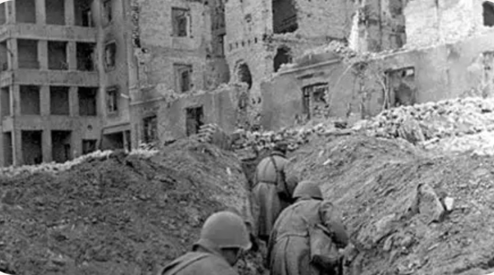

17 juillet 1942 – 2 février 1943
Stalingrad, URSS
URSS : Armée rouge
Axe : Allemagne, Roumanie, Italie, Hongrie
La bataille de Stalingrad est l’affrontement le plus meurtrier de l’histoire. Elle oppose l’Armée rouge aux forces de l’Axe dans un combat urbain d’une violence extrême. La ville devient le symbole de la résistance soviétique face à l’invasion allemande.
Les combats débutent en juillet 1942. Les Allemands progressent dans la ville, mais les Soviétiques défendent chaque rue, chaque bâtiment. En novembre, l’URSS lance l’opération Uranus : un encerclement massif qui piège la 6e armée allemande. Après des mois de combats, les forces allemandes capitulent en février 1943.
Victoire soviétique décisive. La 6e armée allemande est détruite, marquant la fin de l’avancée allemande en URSS.
Stalingrad est le tournant majeur de la guerre sur le front de l’Est. Après cette défaite, l’Allemagne ne reprend jamais l’initiative stratégique. L’Armée rouge entame une série d’offensives qui la mèneront jusqu’à Berlin.